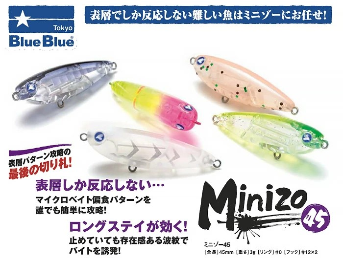

ミニゾー45(minizo 45)
ミニゾー45(minizo 45)はBlueBlue（ブルーブルー）のフローティングペンシルです。
チヌ用トップウォータープラグ「チュパゾー60」を父に持つ、メバル専用設計の45mmフローティングペンシル。「完全浮き」のプラグが苦手だったアミ付きメバルのトップパターンをどこよりも攻略するために設計された一本で、重心移動搭載によるロングレンジ対応・着水音の徹底追求・独自のアイ位置によるダイブアクションなど、メバリングの新境地を開くルアーです。テスター後藤拓巳氏監修の2025年新作。

スペック
- メーカー
- BlueBlue（ブルーブルー）
- 長さ
- 45 mm
- 重さ
- 3 g
- フック
- #12×2
- リング
- #0
- レンジ
- トップ
- タイプ
- トップウォーターペンシル
- 沈下タイプ
- フローティング
- アクション
- 水押し＋ロングステイ波紋誘発
- ターゲット
- ライトゲーム(メバル)
- 価格
- 1,683円（税込）
- 開発者
- 後藤 拓巳
- 発売日
- 2025年4月
▼今すぐチェック
ここに商品リンクやカエレバを手動で追加してください。
ミニゾー45の特徴
「静寂を破る突然の水面炸裂」メバルトップの新境地を開く、チュパゾーの息子
-
チュパゾー60直系の水押し力を45mmに凝縮した「完全浮き」設計
チュパゾー60のチヌ用設計を受け継ぎながら、メバルというターゲットに合わせて喫水の深さ・水押し感・着水音まで徹底的に再設計した。一般的なメバル用トップウォータープラグと違い「ロングステイ中でも絶え間なく揺れ続ける」波紋アクションがアミ付きで食い渋ったメバルに有効。完全フローティングのため、止めても沈まない安心感でスローな誘いを徹底できる。
-
重心移動搭載でメバル用トップの弱点「飛距離不足」を解消
従来のメバル用トップウォータープラグは3gの軽量ゆえ飛距離が出ず、明暗の外・本流からこぼれたヨレ・遠いライズに届かないという弱点があった。ミニゾー45は45mmのボディに重心移動機構を搭載することでこの問題を解決。ロングレンジのピンポイントにキャストでき、指をくわえて見るしかなかった遠くのライズを射程に収める。
-
アイ位置チューニングで「水面下ダイブ」にも対応
スナップ重ためのチューニング、またはフロントダブルリングのチューニングにより、ただ巻き時に水面下1枚を潜って蛇行するアクションに切り替わる。アミ付きパターン以外のベイトフィッシュパターン（巻きの釣り）にも対応できる二刀流設計で、1本でシーン問わず活躍する。
ミニゾー45の使い方
基本操作は2パターン。
①タダ巻き：ただ巻くだけで水面に波紋を出しながら泳ぐ。スローリトリーブがメバルへのアピールに最適。
②チョンチョン＋ロングステイ：ロッドを「チョンチョンチョン」と小刻みに動かしてアクションをつけた後、完全停止して波紋が消えるまで待つ。「2秒止めるか5秒止めるか10秒止めるか」の駆け引きがミニゾー45の最大の楽しさ。ステイ中に揺れ続ける波紋がアミ付き偏食のメバルのスイッチを入れる。水柱が上がってもフッキングしないこともあるが「これもまた一興」——そんな楽しさを含めたルアー。
チューニング（水面下ダイブ）：スナップを重めにするか、フロントのリングをダブルリングにすることで頭が少し沈み、タダ巻き時に水面下1枚を蛇行する動きになる。ベイトフィッシュを意識したメバルや、シンキングペンシルでショートバイトが続く場面に投入してみよう。
ミニゾー45の得意な状況
アミが湧いてメバルがアミに偏食し始めた春のメバリングシーズンが最大の出番。ライズが起きているのに小型のジグヘッド＋ワームでショートバイトばかりになる状況で、ミニゾー45のトップウォーターに切り替えるとロケットバイトが炸裂することがある。明暗の外の遠いライズ・本流からこぼれたヨレの巨メバルなど、これまで指をくわえて見るしかなかった遠距離のポイントへのアプローチが重心移動によって可能になる。
釣れるワンポイント
最重要は「止める時間の長さ」。チョンチョンでアクションをつけた後の止め時間が短すぎると食わないことが多い。最低でも5秒、状況によっては10秒以上のロングステイが必要なこともある。警戒心の強いメバルはルアーをじっくり観察してから口を使うため、焦らず待てるかどうかが釣果の差になる。また着水音が重要で、ルアーを静かに着水させることで警戒心を与えにくい。キャスト精度を上げ、狙ったスポットに静かに落とす練習が大切。
人気カラー
 #03 オキアミ
#03 オキアミ
アミ付きパターンの基本カラー。アミを偏食中のメバルへ最もマッチするナチュラル系。
 #12 スターグロークリア
#12 スターグロークリア
グロー素材でナイトゲームで発光。暗い明暗部でのメバル攻略に強い夜釣り定番カラー。
 #08 ピンクチャートクリア
#08 ピンクチャートクリア
視認性の高いアピール系。濁り・ローライト時の切り札。ルアーの動きを確認しながら使える入門カラー。
 #78 パーティー
#78 パーティー
ミニゾー45オリジナルのはっきりとした視認性カラー。ライズが見えている場面のピンポイント投入に。
画像出典:ブルーブルー公式HP